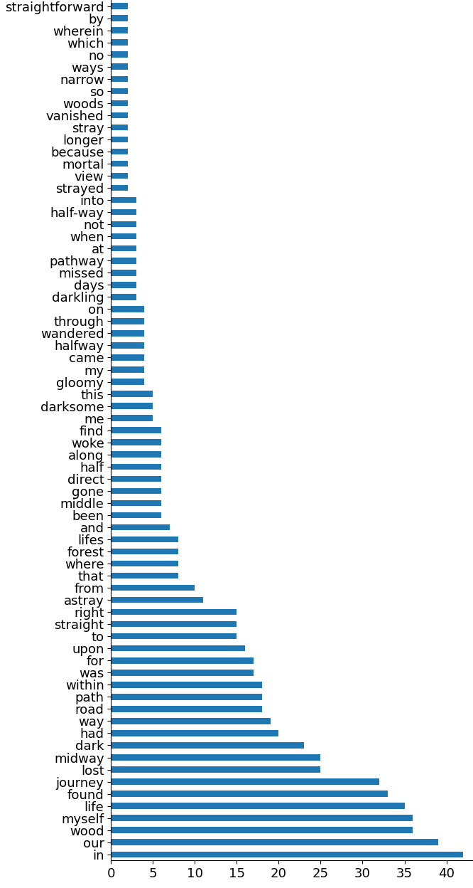

Nel mezzo del cammin di nostra vita
mi ritrovai per una selva oscura
che la diritta via era smarrita
The Divine Comedy – Pt. 1 Inferno – Canto I – (1–3)
This project is based on Caroline Bergvall's ``Via, 48 Dante Variations'', which collects almost 50 translations of the first three lines of Dante's ``Inferno'' into English. Below, we present a selection of statistics describing these translations.
The below diagram shows how frequently various translations of "cammin" and "via" appear in Begvall's Via.
The bar diagram presents frequency of all words which appear at least twice in all translations. (The following words were removed from the count: the, a, an, I, of.)
Finally, a list of words which appear only once in all the translations.
&, again, alone, anywhere, appeared, aright, as, aware, away, be, bewildered, bound, completely, confused, course, darkened, darkness, deep, does, drear, dusky, failed, far, forests, gaze, gloom-dark, go, great, guided, have, highroad, inside, its, journeyed, just, keep, knew, lay, led, made, maze, men, met, mid-journey, midpoint, midtime, might, miles, misplaced, night-dark, nowhere, oath, obscure, obscured, off, off-course, one, over, proper, pursue, reason, reawoke, rightful, roused, seen, shadowed, shadowy, shewed, sight, since, some, span, stage, strife, struggling, sunless, tangled, traveling, trek, true, unfathomable, unto, vestige, wayfaring, we, went, were, wholly, with, wonder